XYZ picked point
[ 0 , 0 , 0 ]
Processo d'acquisizioneScelta del modello e foto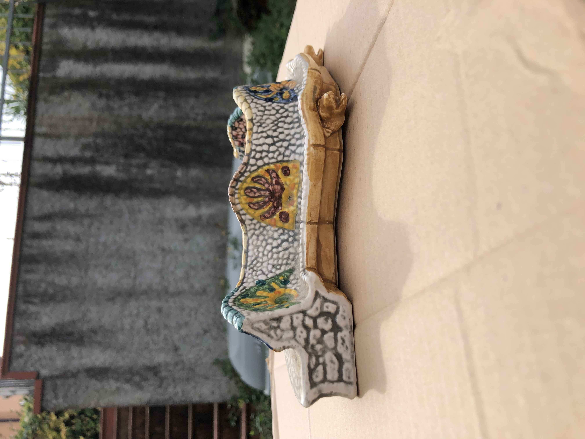Metashape
 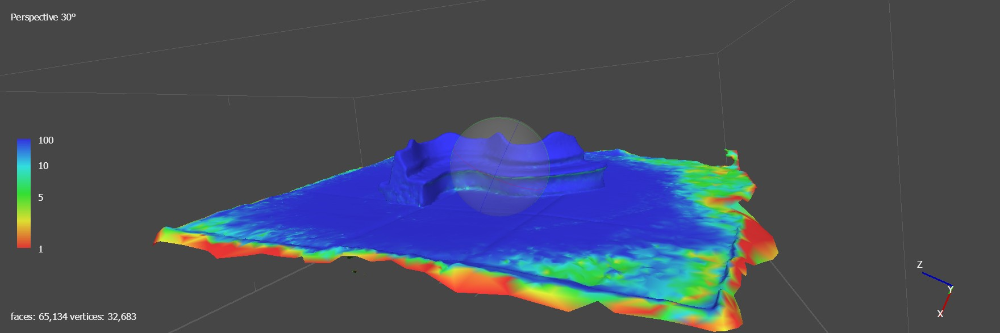
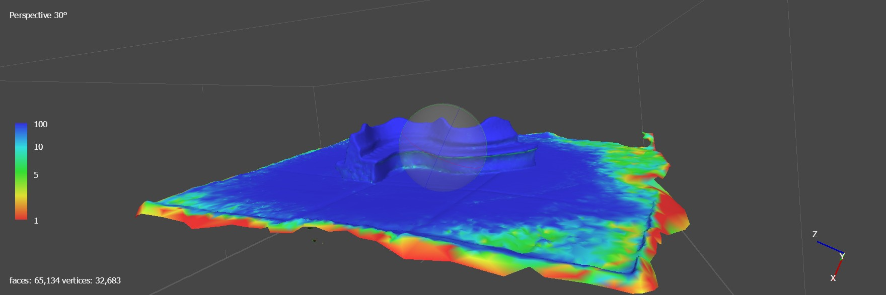
Pulizia del Modello su Meshlab
Problema dei bordi

Confronto con altre versioni ed errori


3D HOP
 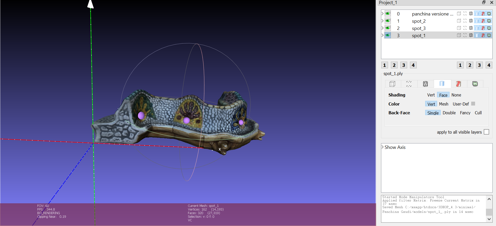
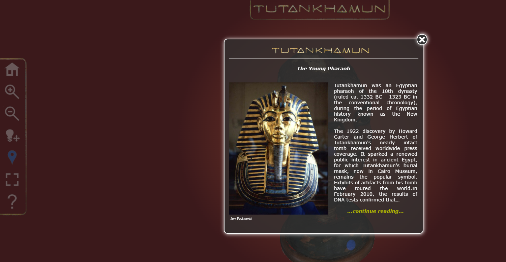
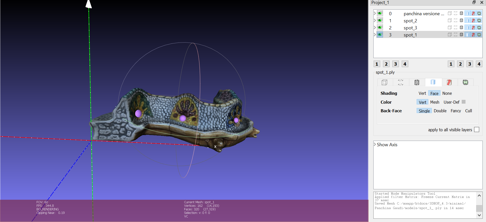
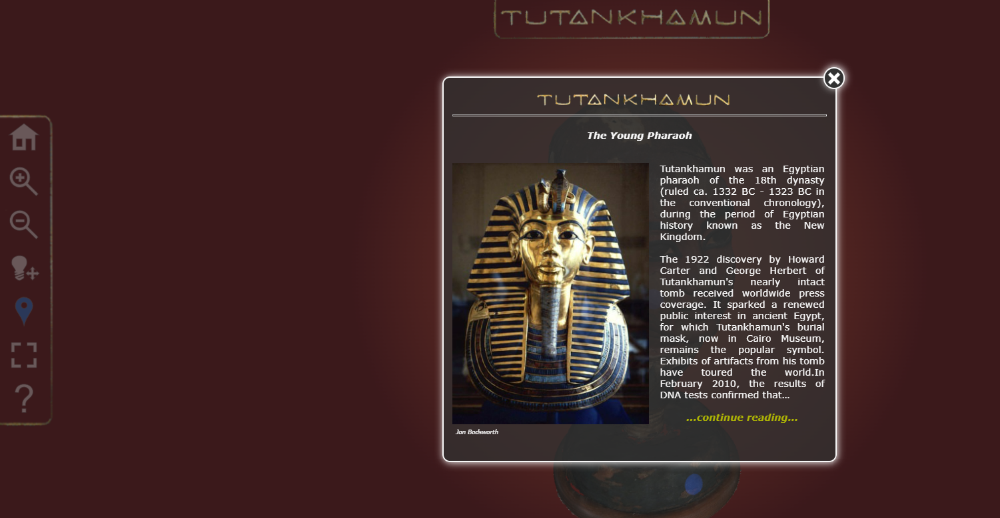

Sito web 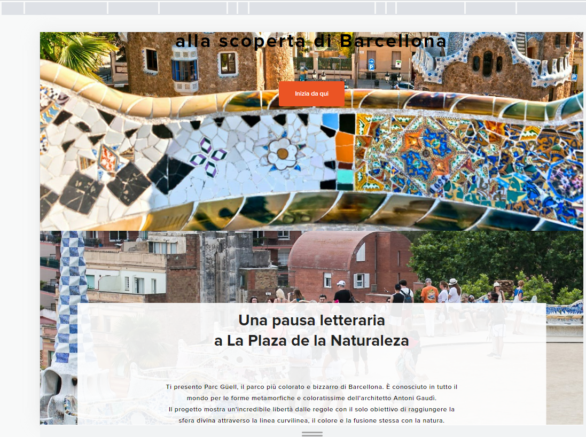
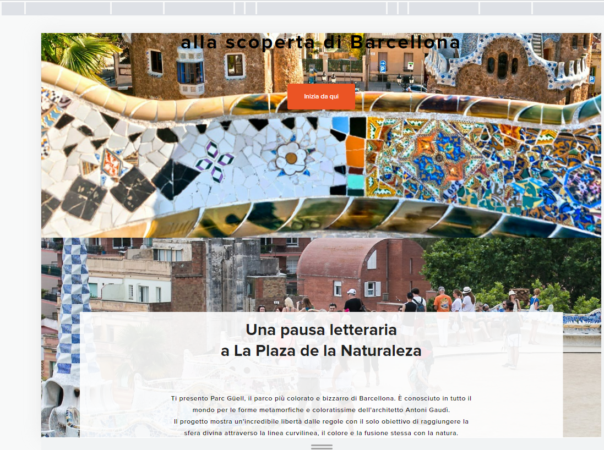
"Just a little bit of CSS"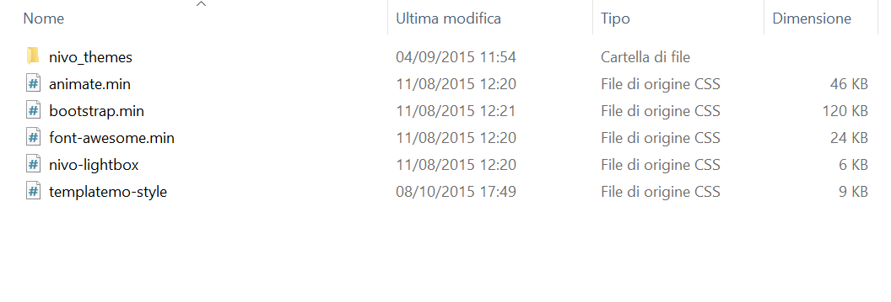Idea della pagina: legame tra passione per i libri e arte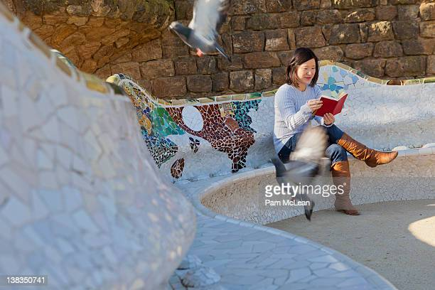 | ||||||||||||||||||||||||||||||||

 Il Gioco dell'Angelo
Il Gioco dell'Angelo